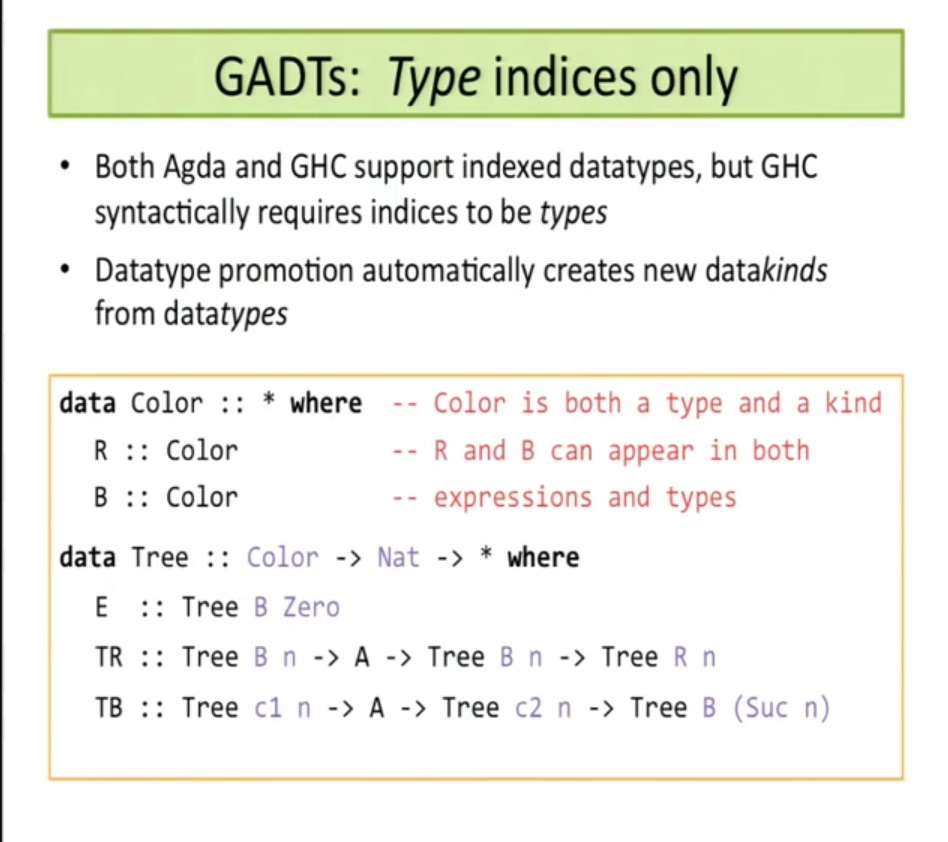

name: title class: middle, center, inverse # { Introduction to | writing } <br/> dependent functions ## (in Scala) #<span style="font-weight: bold;">49</span>, Nov 2014 <a href="http://a.ar.chambau.lt/about">Alexandre Archambault</a> <br/> .about-url[<a href="http://a.ar.chambau.lt/about">a.ar.chambau.lt/about</a>] --- name: abouttitle class: inverse, middle, center # About me --- name: about class: center <p style="text-align: center;"> </img> </p> <code>[https://github.com/alexarchambault](https://github.com/alexarchambault)</code> <code>[http://a.ar.chambau.lt/about](http://a.ar.chambau.lt/about)</code> --- name: whyscalatitle class: middle center inverse # Why Scala? --- name: whyscala # Why Scala? Refactoring - don't lose trust in your code while you refactor it. -- Faster developments too -- name: whyscala2 <div class="spacebefore">Thanks to...</div> ## its type system (very) loosely: Haskell types + OOP --- name: barendregttitle class: middle center inverse # Barendregt cube --- name: barendregt # Barendregt cube <div id="cubeleg"> <img id="cube" src="images/cube.jpg"></img> Barendregt cube <br/> (1991, Pierce 2002) </div> <div id="cube-code"> <pre><code class="lang-scala">def fold[B](ifEmpty: B)(f: A => B): B </code></pre> </div> -- <div id="cube-code"> <pre><code class="lang-scala">def subst[F[_]](f: F[A]): F[B] </code></pre> </div> -- <div id="cube-code-dep"> Last one: dependent types </div> Bonus: inheritance <div id="cube-code"> <pre><code class="lang-scala">def getOrElse[B >: A](default: B): B </code></pre> </div> -- name: barendregtlast --- name: plan class: middle 1. New data types, Values as types 2. Dependent functions with implicits and dependent methods 3. More dependent functions 4. Other languages --- name: hlisttitle class: inverse center middle # HLists --- name: hlists class: up compact # HLists Goal: representing products of arbirary size (beyond tuples' limit, 22) Secondary goal: having a *general* representation of products -- ```scala sealed trait HList ``` -- ```scala case object HNil extends HList ``` -- ```scala case class ::[H, T <: HList](head: H, tail: T) extends HList ``` -- E.g. ```scala HNil ``` -- ```scala ::("a", HNil) // ::[String, HNil] ``` -- ```scala "a" :: HNil // String :: HNil (same as previous one) ``` -- ```scala ::("a", ::(1, ::(true, HNil))) // ::[String, ::[Int, ::[Boolean, HNil]]] ``` -- ```scala "a" :: 1 :: true :: HNil // String :: Int :: Boolean :: HNil // (same as previous one) ``` etc. --- name: hlistsother ## Alternate HList ```scala () // Unit, instead of HNil ``` -- ```scala ("a", ()) // (String, Unit), instead of String :: HNil ``` -- ```scala ("a", (2, (true, ()))) // (String, (Int, (Boolean, Unit))) // instead of String :: Int :: Boolean :: HNil ``` etc. -- Other way of seeing them: nested pairs, ending with <code>Unit</code> Made with `(A, B)` and `Unit` -- What if we substitute <code>Either</code> to the pair?<br/>(And `Nothing` to `Unit` - dual) --- name: eithers class: up compact ## Eithers instead of pairs ```scala // Unit Nothing ``` -- ```scala // String :: HNil Either[String, Nothing] ``` -- ```scala // String :: Int :: Boolean :: HNil Either[String, Either[Int, Either[Boolean, Nothing]]] ``` -- Instances? Second one ```scala Left("a") ``` -- Third one ```scala Left("a") Right(Left(2)) Right(Right(Left(true))) ``` --- name: coproducttitle class: middle center inverse # Coproducts --- name: coproducteither # Disjoint union a.k.a. Coproduct ```scala sealed trait Coproduct ``` -- ```scala sealed trait CNil extends Coproduct ``` -- ```scala sealed trait :+:[H, T <: Coproduct] extends Coproduct ``` -- ```scala case class Inl[H, T <: Coproduct](head : H) extends :+:[H, T] case class Inr[H, T <: Coproduct](tail : T) extends :+:[H, T] ``` -- Instances: ```scala // :+:[Int, :+:[String, :+:[Boolean, CNil]]] // i.e. Int :+: String :+: Boolean :+: CNil Inl(2) Inr(Inl("a")) Inr(Inr(Inl(true))) ``` --- name: funchlist class: center middle inverse # Functions for HLists? --- name: miseenbouche class: up compact # Functions for HLists? ### `elem` ```scala val l = 0 :: "a" :: true :: HNil elem(l, 0) // Int elem(l, 1) // String // ... ``` -- ### `concat` ```scala val l = concat("a" :: HNil, 2 :: true :: HNil) // String :: Int :: Boolean :: HNil ``` -- ### Signatures? ```scala def elem(l: HList, n: Int): ??? ``` -- ```scala def concat(first: HList, second: HList): HList ``` --- name: valuestypetitle class: center middle inverse # Values are types --- name: typesseem # Literals types ```scala scala> val s = "a" s: String = a scala> final val s = "a" * s: String("a") = a ``` -- ```scala scala> val n0 = 2 n0: Int = 2 scala> final val n = 2 * n: Int(2) = 2 ``` -- So primary types are not finals! They have descendents. --- template: funchlist --- name: miseenbouche2 # Functions for HLists? ```scala val l = 0 :: "a" :: true :: HNil elem(l, 0) // Int elem(l, 1) // String // ... ``` ```scala def elem(l: HList, n: Int): ??? ``` -- We want overloads like ```scala def elem[A](l: A :: HList, i: Int(0)): A def elem[A, B](l: A :: B :: HList, i: Int(1)): B // etc. ``` --- name: typelittproblemtitle class: center middle inverse # Problem --- name: typelittproblem # Problems - can't write these specific types directly ```scala scala> val s: String("a") = "a" <console>:1: error: ';' expected but '(' found. val s: String("a") = "a" ^ ``` -- ([for now](http://speakerdeck.com/folone/42-dot-type-literal-based-singleton-types)) -- - don't get instances of these types by default ```scala scala> val s = "a" s: String = a ``` `s` is immutable, so why not ascribe it type `String("a")`? -- Luckily, there are workarounds in shapeless --- name: litteralsworkarounds # Workarounds - Getting instances of type literals ```scala scala> import syntax.singleton._ import syntax.singleton._ scala> val i = 2.narrow i: Int(2) = 2 ``` -- - Using these types ```scala scala> val w = Witness(2) w: shapeless.Witness{type T = Int(2)} = fresh$macro$4$1@e31edc scala> val i: w.T = 2 i: w.T = 2 ``` -- But `Int(...)` will prove to be not very practical to use --- name: nat # Workarounds ```scala trait Nat case class Succ[P <: Nat]() extends Nat ``` -- ```scala class _0 extends Nat val _0: _0 = new _0 ``` -- ```scala type _1 = Succ[_0] val _1: _1 = new _1 ``` ```scala type _2 = Succ[_1] val _2: _2 = new _2 ``` etc. --- template: funchlist --- name: miseenbouche3 # Functions for HLists? ```scala val l = 0 :: "a" :: true :: HNil elem(l, 0) // Int elem(l, 1) // String // ... ``` We want to write something like ```scala def elem(l: HList, i: Int): ??? ``` -- name: miseenbouche32 but with `l` of a more refined type than just `HList`<br/>- e.g. `Int :: String :: Boolean :: HNil` and `i` of a more refined type than just `Int`<br/>- e.g. `Int(2)` or `Succ[Succ[_0]]` -- name: miseenbouche31 The return type is a (type) function of these refined types --- name: whatsdepfuntitle class: center middle inverse # Dependent functions --- name: whatsdepfun class: up # What's a dependent function? A function whose return type depends on the **values** of its arguments -- class: up </img> [Homotopy Type Theory (HoTT)](http://homotopytypetheory.org/book/), p25 --- class: up # What's a dependent function? But each value has a specific type -- class: up , e.g. `2 :: "a" :: HNil` - is a `HList` - with specific type(s) `Int :: String :: HNil` - or even `Int(2) :: String("a") :: HNil` `2` - is an `Int` - with specific type `Int(2)` -- class: up A function whose return type depends on the .strike[values] **specific/refined types** of its arguments. --- name: howtowritetitle class: center middle inverse # How to write / represent them? --- name: depfuntypelambda ## type lambda? See [Stefan Zeiger talk](http://slick.typesafe.com/talks/scalaio2014/Type-Level_Computations.pdf) at Scala.io But may be limited (no branching / no pattern matching) -- ## implicits / dependent methods Miles Sabin's method, the one used in [shapeless](https://github.com/milessabin/shapeless) Closer to what is done in Idris, or to (standard) functions in Haskell dependent functions defined with (some kind of) pattern matching --- name: yousawittitle class: center middle inverse # You already used it (in a very simple form) --- name: implicitsalacbf class: mildcompact # CanBuildFrom ```scala def map[B, That](f: A => B)(implicit cbf: CanBuildFrom[Repr, B, That] ): That ``` <p></p> -- ```scala scala> Map("a" -> 1, "b" -> 2).map{case (k, v) => (v, k) } res1: scala.collection.immutable.Map[Int,String] = Map(1 -> a, 2 -> b) ``` ```scala scala> Map("a" -> 1, "b" -> 2).map{case (k, v) => k } res2: scala.collection.immutable.Iterable[String] = List(a, b) ``` -- ```scala implicit def mapCanBuildFrom[A, B] : CanBuildFrom[Map[_, _], (A, B), Map[A, B]] = ... ``` ```scala implicit def canBuildFrom[T] : CanBuildFrom[Iterable[_], T, Iterable[T]] = ... ``` --- template: funchlist --- name: cbfcloser # Functions for HList? ```scala def elem(l: HList, i: Int): ??? ``` ### 3 problems - **refined types** of arguments - **calculation of output type** (like `CanBuildFrom`) - **implementation**? --- name: refinedtypes # Refined types of arguments `HList`s already have a refined type (not typed as just `HList` by default) ```scala scala> val l = 1 :: "a" :: true :: HNil l: Int :: String :: Boolean :: HNil = 1 :: a :: true :: HNil ``` -- `Int`s don't ```scala scala> val i = 2 i: Int = 2 ``` and a recursive type will be easier to move around, so `Nat` --- name: refinedtypes2 # Refined types of arguments `Nat` already has its refined type: ```scala trait Nat { type N <: Nat } ``` ```scala def f(n: Nat)(implicit f: F[n.N]) = ... ``` --- name: hlistfun # Refined types of arguments ```scala def elem(l: HList, n: Int): ??? def concat(first: HList, second: HList): HList ``` -- becomes ```scala def elem[L <: HList](l: L, n: Nat): ??? def concat[L <: HList, M <: HList](first: L, second: M): HList ``` --- name: withimplicits # Calculating return types ```scala def elem[L <: HList](l: L, n: Nat): ??? def concat[L <: HList, M <: HList](first: L, second: M): HList ``` -- becomes ```scala def elem[L <: HList](l: L, n: Nat) (implicit elem: Elem[L, n.N]): elem.Out = ??? ``` ```scala def concat[L <: HList, M <: HList](first: L, second: M) (implicit concat: Concat[L, M]): concat.Out = ??? ``` (like `CanBuildFrom`) --- name: patternmatchdep # Implementation These functions can be roughly defined with pattern matching ```scala def elem[L <: HList](l: L, n: Nat) = (l, n) match { case (h :: t, 0) => h case (h :: t, n + 1) if elem.isDefinedAt(t, n) => elem(t, n) } ``` -- ```scala def elem[L <: HList](l: L, n: Nat) (implicit elem: Elem[L, n.N]): elem.Out = ??? ``` --- name: patternmatchdepconcat # Implementation These functions can be roughly defined with pattern matching ```scala def concat[L <: HList, M <: HList](l: L, m: M) = (l, m) match { case (HNil, m) => m case (h :: t, m) => h :: concat(t, m) } ``` -- ```scala def concat[L <: HList, M <: HList](l: L, m: M) (implicit concat: Concat[L, M]): concat.Out = ??? ``` --- name: depfunimplicits class: up ## Calculating return types & Implementation -- ```scala def elem[L <: HList](l: L, n: Nat) (implicit elem: Elem[L, n.N]): elem.Out = (l, n) match { case (h :: t, 0) => h case (h :: t, n + 1) if elem.isDefinedAt(t, n) => elem(t, n) } ``` ```scala trait Elem[L <: HList, N <: Nat] { type Out def apply(l: L, n: N): Out } ``` represents a case for a dependent function taking a `HList` and a `Nat` as input --- name: depfunimplicitsdef class: up compact ## Calculating return types & Implementation ```scala def elem[L <: HList](l: L, n: Nat) (implicit elem: Elem[L, n.N]): elem.Out = (l, n) match { case (h :: t, 0) => h case (h :: t, n + 1) if elem.isDefinedAt(t, n) => elem(t, n) } ``` ```scala // -> object Elem { type Aux[L <: HList, N <: Nat, Out0] = Elem[L, N] { type Out = Out0 } implicit def elemZero[H, T <: HList]: Aux[H :: T, _0, H] = new Elem[H :: T, _0] { type Out = H def apply(l: H :: T): Out = l.head } implicit def elemSucc[H, T <: HList, N <: Nat](implicit elemTail: Elem[T, N] ): Aux[H :: T, Succ[N], elemTail.Out] = new Elem[H :: T, Succ[N]] { type Out = elemTail.Out def apply(l: H :: T): Out = elemTail(l.tail) } } ``` --- class: up compact ## Calculating return types & Implementation ```scala def elem[L <: HList](l: L, n: Nat)(implicit elem: Elem[L, n.N] ): elem.Out = elem(l) ``` --- name: depfunimplemconcat ```scala object Concat { type Aux[L <: HList, M <: HList, Out0 <: HList] = Concat[L, M] { type Out = Out0 } implicit def concatHNil[L <: HNil, M <: HList]: Aux[L, M, M] = new Concat[L, M] { type Out = M def apply(l: L, m: M): Out = m } implicit def concatHCons[H, T <: HList, M <: HList](implicit tailConcat: Concat[T, M] ): Aux[H :: T, M, H :: tailConcat.Out] = new Concat[H :: T, M] { type Out = H :: tailConcat.Out def apply(l: H :: T, m: M): Out = l.head :: tailConcat(l.tail, m) } } ``` -- ```scala def concat[L <: HList, M <: HList](first: L, second: M)(implicit concat: Concat[L, M] ): concat.Out = concat(first, second) ``` --- name: resume # What we did - Keeping the refined types - Writing the function as a pseudo-pattern match - Using implicits for each cases (for return types and implementations) --- name: moretitle class: center middle inverse # More dependent functions (mainly from shapeless) --- name: examplesrec # Recursive dependent functions `HList` - `at`/`apply` - `take`, `drop`, `split` - `:+`, `++`, `++:`, `remove*` - `last`, `init` - ... --- name: examplescoprod # Recursive dependent functions `Coproduct` ```scala val c = Coproduct[Int :+: Double :+: Boolean :+: CNil](0.0) c.at(0) // Option[Int], = None c.at(1) // Option[Double], = Some(0.0) c.at(2) // Option[Boolean], = None ``` - `take`, `drop`, `split` - ... --- name: recunions # Recursive dependent functions `Record` ```scala val r = Record(i=1, s="a") r.get('i) // Int r.get('s) // String ``` `Union` ```scala type U = Union.`'i -> Int, 's -> String` val ui = Union[U](i=1) val us = Union[U](s="a") ui.get('i) // Option[Int], = Some(1) ui.get('s) // Option[String], = None us.get('i) // Option[Int], = None us.get('s) // Option[String], = Some("a") ``` --- name: examplesrectake # Recursive dependent functions `HList` `Take`: intent ```scala def take(l: HList, n: Int) = (l, n) match { case (_, 0) => HNil case (h :: t, n + 1) => h :: take(t, n) } ``` --- name: examplesrectakecomp class: up # Recursive dependent functions `HList` `Take`: implementation ```scala trait Take[L <: HList, N <: Nat] extends DepFn1[L] { type Out <: HList } object Take { type Aux[L <: HList, N <: Nat, Out0 <: HList] = Take[L, N] { type Out = Out0 } implicit def takeZero[L <: HList]: Aux[L, _0, HNil] = new Take[L, _0] { type Out = HNil def apply(l : L): Out = HNil } implicit def takeSucc[H, T <: HList, N <: Nat, Out <: HList] (implicit tt : Take[T, N]): Aux[H :: T, Succ[N], H :: tt.Out] = new Take[H :: T, Succ[N]] { type Out = H :: tt.Out def apply(l : H :: T): Out = l.head :: tt(l.tail) } } ``` --- name: composing # Composing dependent functions Intent: ```scala trait Obs[A] { def value: A } def calc(l: (Obs[A], Obs[B], ...))(f: (A, B, ...) => T): T = f(l.map(_.value)) ``` -- Composing: - Tuple to HList - HList.map for a `Obs ~> Id` - function of arity n -> function accepting an HList of args --- name: composingimpl # Composing dependent functions Implementation: ```scala object values extends (Obs ~> Id) { def apply[T](t: Obs[T]) = t.value } def calculate[T, V <: HList, L <: HList, F, Z](obss: T)(f: F)(implicit gen: Generic.Aux[T, L], mapper: Mapper.Aux[values.type, L, V], ftp: FnToProduct.Aux[F, V => Z] ): Z = ftp(f)(mapper.apply(gen.to(obss))) ``` .right[.small[[from gist.github.com/travisbrown/8b37a1e4205b3e077f2b](https://gist.github.com/travisbrown/8b37a1e4205b3e077f2b)]] --- name: examplestypelevel # Composing dependent functions `HList`: - `map`, `flatMap`, `collect`, `fold*`, `reduce*` - `to[M[_]]` `Coproduct`: - `map`, `flatMap`, `fold` - `unify` `Record` / `Union` - `values`, `mapValues`, `toMap` --- name: examplesproofs # Dependent functions for proofs ```scala val l = Sized[List](1, 2, 3) // l(3) // Does not compile ``` -- ```scala class Sized[Repr, L <: Nat] ``` -- `apply`, `head`, `tail`, `take`, `drop`, `map`, ... --- name: evolveddepfun # Dependent functions for proofs ```scala it.grouped(2).withPartial(false) .map{ t => (t(0), t(1)) } .map{case (first, second) => ...} Some(str.split(";", 3)).filter(_.length == 3) .map(t => (t(0), t(1), t(2))) match { case None => ... case Some((first, second, third)) => ... } ``` -- becomes ```scala it.groupedT(2).map{ case (previous, current) => ... } str.splitT(3, ";") match { case None => // failed case Some((first, second, third)) => // success } ``` See [`shapeless-refined-std`](https://github.com/alexarchambault/shapeless-refined-std) More precise collection methods: refined std --- name: complic1 class: center middle </img> --- name: complic2 class: center middle </img> --- name: complic3 class: center middle </img> --- name: otherlanguagestitle class: center middle inverse # Other languages --- name: haskell # Haskell Specific/refined types: **data type promotion** **Type families** See [Stephanie Weirich, Depending on Types, ICPF 2014](https://www.youtube.com/watch?v=rhWMhTjQzsU) --- name: weirich1 </img> --- name: weirich2 </img> --- template: haskell But no macros/OOP, so `HList` and `Coproduct` seem less interesting / looked at in Haskell. --- name: idris # Idris Syntax close to Haskell See [Brian McKenna, Idris: Practical Dependent Types, Strange Loop 2014](https://www.youtube.com/watch?v=4i7KrG1Afbk) --- name: bmk1 class: center middle </img> --- name: bmk2 class: center middle </img> --- name: coq # Coq More for proofs <div style="float: right;"><img style="margin-left: -300px; margin-top: -100px; position: absolute; width: 40%" src="images/cube.jpg"></img></div> See Alexandre Bertails,<br/>Let Curry-Howard code for me,<br/>Scala IO 2014 --- name: hott </img> --- name: repr # Representing dependent functions in Scala ```java F<Integer, Integer> timesTwo = new F<Integer, Integer>() { public Integer f(Integer i) { return i * 2; } } ``` The same way one can *represent* closures in Java < 1.8 (anonymous classes can help too), we can represent some dependent functions in Scala with the help of implicits, dependent methods, type members, ... Caveats: - A bit verbose - "Manual" compilation of some aspects --- name: tldr # TL;DR - Dependent functions are functions whose return type depends on the values of its arguments, that is on their specific/refined types - Some can be *represented* in Scala with the help of implicits, and workaround for refined types - There are already a lot of them in shapeless - Let's hope Scala will catch up on other languages